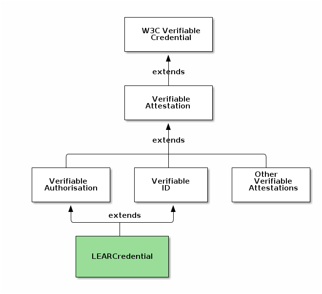
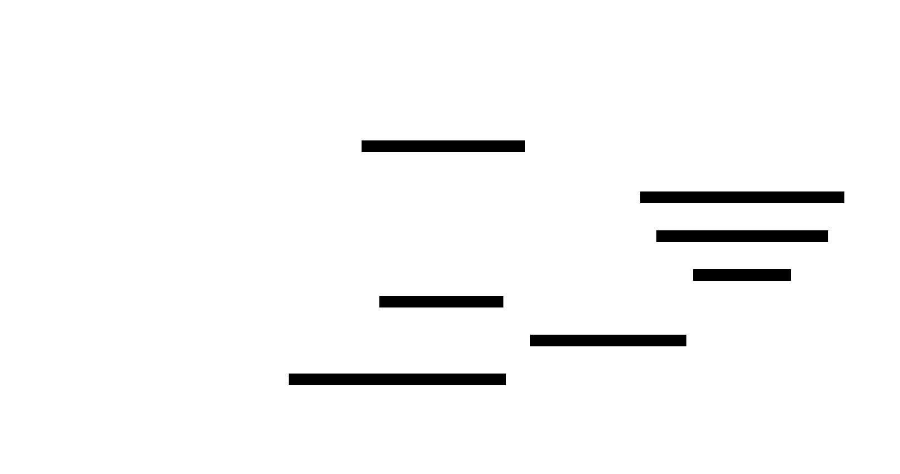

A common problem in ecosystems like Data Spaces is how organisations can onboard the ecosystem in a trusted and automated way, avoiding manual paperwork.
1 The user (GoodAir employee) uses his Laptop browser to access the DOME portal to perform the onboarding process.
2 The browser sends a request to the Packet Delivery portal server.
3 The portal redirects the user to the login page of the Verifier component of DOME Onboarding. The page shows a button labelled “Login with Verifiable Credentials” or something similar.
This document describes how the process of onboarding can be performed by an employee of an organisation, who has been appointed to do so by a legal representative of the organisation using eIDAS certificates and Verifiable Credentials.
The appointed employee will perform the process by using a special type of Verifiable Credential called LEARCredential (from Legal Entity Appointed Representative).
Any Verifier that trusts the eIDAS Trust Framework will be able to verify that:
The person presenting the LEARCredential is the same as the one identified in the credential
A legal representative of the organisation has attested that the person has the powers described in the credential
This enables the person presenting the LEARCredential to start the onboarding process and also to provide any additional required documentation, preferably as additional Verifiable Credentials to enable automatic verification of compliance with the onboarding requirements (including Gaia-X credentials issued by the Compliance Service of Gaia-X).
Introduction
A common problem in ecosystems like Data Spaces is how organisations can onboard the ecosystem in a trusted and automated way, avoiding manual paperwork.
This document describes how the process of onboarding can be performed by an employee of an organisation, who has been appointed to do so by a legal representative of the organisation using eIDAS certificates and Verifiable Credentials.
The appointed employee will perform the process by using a special type of Verifiable Credential called LEARCredential (from Legal Entity Appointed Representative).
To achieve a high level of legal certainty under eIDAS, the LEARCredential is:
signed or sealed with an eIDAS certificate which is either:
a certificate for electronic seals issued to a legal person by a Qualified Trust Service Provider, or
a certificate for electronic signatures, issued to a legal representative of the legal person by a Qualified Trust Service Provider.
signed using the JSON Advanced Electronic Signature format described in [[[ETSI-JADES]]]
The LEARCredential includes claims identifying the employee and a description of the concrete powers that have been delegated by the legal representative of the organisation.
By signing/sealing the credential with an eIDAS certificate, the legal representative attests that the powers described in the credential have been delegated to the employee (maybe under some conditions, also described in the credential).
In this way, the LEARCredential has the same legal status as any other document in other formats (e.g., PDF) signed in an eIDAS-compliant way, but with all the advantages provided by the Verifiable Credential format.
In addition, the LEARCredential includes cryptographic material that allows the appointed employee to use the credential as an online authentication mechanism in an onboarding portal, by proving that the holder of the credential is the same person identified in the credential.
Any Verifier that trusts the eIDAS Trust Framework will be able to verify that:
The person presenting the LEARCredential is the same as the one identified in the credential
A legal representative of the organisation has attested that the person has the powers described in the credential
This enables the person presenting the LEARCredential to start the onboarding process and also to provide any additional required documentation, preferably as additional Verifiable Credentials to enable automatic verification of compliance with the onboarding requirements (including Gaia-X credentials issued by the Compliance Service of Gaia-X).
Both types of eIDAS certificates mentioned above are an electronic attestation that links electronic seal/signature validation data to a legal person and confirms the name of that person. This way, the certificate, usually linked to the sealed/signed document, can be used to verify the identity of the creator of the seal/signature and whether the document has been sealed/signed using the corresponding private key.
Before issuing a certificate like the above, the Qualified Trust Service Provider (QTSP) performs validations against `Authentic Sources` to authenticate the identity of the organisation:
The data concerning the business name or corporate name of the organisation.
The data relating to the constitution and legal status of the subscriber.
The data concerning the extent and validity of the powers of representation of the applicant.
The data concerning the tax identification code of the organisation or equivalent code used in the country to whose legislation the subscriber is subject.
The person controlling the above certificates will appoint a legal entity representative (LEAR) by generating and signing a Verifiable Credential which:
Includes identification data of an employee of the organisation
Includes claims stating the delegation of specific powers to perform onboarding on behalf of the organisation
Includes a public key where the corresponding private key is controlled by the employee, enabling him to prove that he is the holder of the credential when it is being used in an authentication process like the onboarding process described in this document.
The LEARCredential uses the `did:elsi` method for the identifiers of legal persons involved in the process, to facilitate the DID resolution and linkage with the eIDAS certificates. The `did:elsi` method is specified in [[[DID-ELSI]]].
The high-level view of the process is described in the following diagram, when a COO (Chief Operating Officer) appoints an employee to perform the onboarding process:
High level view of issuance of LEARCredential
Participants
Here we introduce the actors of the reference use case we are going to have. The main actors are marked in yellow in the following diagram.
RealTruth is a Trust Service Provider operating under the eIDAS Trust Framework, which issues a certificate for seals to the company GoodAir. GoodAir is a business that provides some services using an Air Quality application operated by GoodAir.
RealTruth also provides a certificate for signatures to the COO of the GoodAir company, so the COO can use the certificate to sign documents on behalf of GoodAir (like contracts, invoices, financial reports, ...) in a way that is compliant with eIDAS.
The COO of GoodAir will issue a verifiable credential of type LEARCredential to an employee of GoodAir, signing the credential with his certificate for signatures.
GoodAir: the company that wants to perform the onboarding process
The new participant is a business providing an Air Quality Monitoring application as a service. The business is called GoodAir and it operates the application, which receives data from a set of sensors that may or may not be the property of GoodAir. The sensors must have received a certification to be able to operate and send data to the GoodAir application.
The company is registered in the tax agency and business registry of Spain with VAT number VATES-12345678.
COO (Chief Operating Officer) of GoodAir
The GoodAir company is small and the only person that can sign contracts on behalf of the company is the COO (Chief Operating Officer). The COO is a legal representative of the company and she is registered as so in the business registry of Spain.
The COO has a certificate for electronic signatures issued by one of the TSPs in Spain enabling the COO to perform electronic qualified signatures as legal representative of GoodAir, instead of doing them manually.
The X.509 certificate of the COO has the following contents in the Subject field (the example below is derived from a real certificate but with the identifiers modified to be an example):
cn=56565656V Jesus RuizserialNumber=56565656VgivenName=Jesussn=Ruiz2.5.4.97=VATES-12345678o=GoodAirc=ES2.5.4.13=Notary:Juan Lopez/Protocol Num:7172/Date:07-06-2021
The above set of fields bind the legal identity of the COO with the identity of the business:
serialNumber is the unique number recognized by the Spanish Government for spanish citizens (called NIF).
2.5.4.97 is the official OID for organizationIdentifier. The contents of this field in the example certificate is the unique identifier for the legal person GoodAir.
Before issuing a certificate like the above, the TSP has to perform some validations to ensure that in the official source of truth (the business registry of Spain in this case) there is already registered information that states that the COO has indeed powers to act on behalf of GoodAir as a legal representative.
RealTruth: a Trust Service Provider
RealTruth is an EU TSP, which appears in the TL (Trusted List) maintained by the German Government.
RealTruth is a TSP based in Germany but operates in most of the countries of the EU and so being able to provide Trust Services across many countries, including Spain.
As all TSPs in the TLs of the Member States, its entry in the TL includes one or more "Services" entries which describe the Trust Services provided by the TSP.
A TSP can have one Service issuing certificates for signatures, another service issuing certificates for seals, another service for timestamping, etc.
The regulator approves or suspends each service from a TSP individually, and the services are the root anchor for a given trust environment.
In our case, the entry for RealTruth in the TL includes a `<TSPService>` entry, and inside it the `<ServiceDigitalIdentity>` entry includes a DER-encoded certificate specifying the digital identity of the root anchor for that trust domain. The certificate for the Service has in the Subject field:
2.5.4.97=VATDE-170173453CN=DRV QC 11 MA CA 2017caOU=QC 11 Mitarbeiter CAO=Deutsche Rentenversicherung WestfalenC=DE
Which in the organizationIdentifier field (OID 2.5.4.97) specifies the unique organisation identifier assigned by the German regulatory authority to the TSP: VATDE-170173453.
RealTruth provides `Legal Person Representative Certificates` which are qualified in accordance with Regulation (EU) No. 910/2014 of the European Parliament and of the Council of 23 July 2014 on electronic identification and trust services for electronic transactions in the internal market.
The certification policies of RealTruth includes the following sentences:
The Registration Authority must verify the following information in order to authenticate the identity of the organisation:
The data concerning the business name or corporate name of the organisation.
The data relating to the constitution and legal status of the subscriber.
The data concerning the extent and validity of the powers of representation of the applicant.
The data concerning the tax identification code of the organisation or equivalent code used in the country to whose legislation the subscriber is subject.
The TSP (RealTruth in this case) performs the verifications against `Authentic Sources`.
Authentic Sources are the public or private repositories or systems recognised or required by law containing attributes about a natural or legal persons.
The Authentic Sources in scope of Annex VI of the [eIDAS2] legislative proposal are sources for attributes on address, age, gender, civil status, family composition, nationality, education and training qualifications titles and licences, professional qualifications titles and licences, public permits and licences, financial and company data.
Authentic Sources in scope of Annex VI are required to provide interfaces to Qualified Electronic Attestation of Attributes (QEAA) Providers to verify the authenticity of the above attributes, either directly or via designated intermediaries recognised at national level.
Authentic Sources may also issue (Q)EAA-s themselves if they meet the requirements of the eIDAS Regulation. It is up to the Member States to define terms and conditions for the provisioning of these services, but according to the minimum technical specifications, standards, and procedures applicable to the verification procedures for qualified electronic attestations of attributes.
In accordance to the policies, RealTruth made those validations when issuing the certificate to the COO, in such a way that the Relying Parties verifying the certificate can have a high level of trust in the assertion that the natural person identified in the certificate (with Spanish ID of 56565656V) is a legal representative of he GoodAir company (organizationIdentifier VATES-12345678).
John Doe: an administrative employee of GoodAir
This is an employee of the central administration department of GoodAir, who is going to be formally nominated to manage the onboarding process of GoodAir in the Data Space and some other operations in the Data Space once GoodAir is onboarded.. In particular, this employee is going to be nominated as a LEAR (Legal Entity Appointed Representative).
As its name implies, the LEAR has to be nominated by a legal representative of the GoodAir organisation with the necessary legal authority to commit the organisation for this type of decision. In our case, the COO of GoodAir will nominate John Doe as the LEAR of GoodAir, delegating to him the capabilities to perform onboarding in the DOME and some other associated tasks. That means that John Doe will not be empowered to perform other actions like onboarding on other Data Spaces or signing contracts or invoices on behalf of GoodAir.
To perform the nomination, the COO of GoodAir (a legal representative of GoodAir) will issue a special credential to John Doe and will sign the credential with his certificate for signatures as legal representative of GoodAir. The details are described later in this document.
DOME: an instance of a Data Space for Smart Cities
DOME is a Data Space where local governments can procure data and services from other entities that act as service providers. At the same time, the local governments can also act as data and service providers for other entities in the Data Space.
The DOME Data Space has an onboarding service that allows external entities to perform onboarding in an automated fashion by using Verifiable Credentials that have been issued by trusted entities. The complete Trust Framework used by DOME is composed from a series of Trust Frameworks, some managed internally using a governance model of DOME and some others managed externally but by trusted entities. At the root of the Trust Framework of DOME is the eIDAS Trust Framework and the pan-european recognized list of Trust Service Providers issuing the eIDAS compliant digital identities, in the form of certificates for signatures/seals.
In order to participate in DOME, every legal person requires a certificate for seals or that one of its legal representatives has a certificate for signatures (or both). The DOME entity is registered in France with VAT number VATFR-99999999.
The LEARCredential
In this example the LEARCredential will be generated using the certificate of the COO.
The credential will be generated with an application that the COO will use as VC Issuer and that allows the employee to receive the credential using his credential wallet, using [[OpenID.VCI]] to achieve compliance with the EUDI Wallet ARF.
The application enables the COO to specify the information required to create the LEARCredential, specifying the employee information and the specific type of LEARCredential. In general, there may be different instances of LEARCredentials for different purposes. One employee can have more than one LEARCredential, each having a different delegation of powers for different environments.
Claims identifying the employee
These are claims identifying the subject of the credential, the person who will act as LEAR. Each Data Space can define their own depending on their specific requirements. For our example, we use the same that are used for accessing the EC portal. The claims in the credential are the digital equivalent of their analog counterparts, displayed here for illustration.
LEAR subject identification data.
From the above form we can derive the following claims:
In this example we use the `did:key` method for the DID of the employee, which provides a very high level of privacy and given the way the LEARCredential is generated it supports the verification of the chain of responsibility with a proper level of guarantee.
If the highest levels of assurance and legal compliance is desired and the employee has an eIDAS certificate for signatures (in this case a personal one, not one like the COO), we could use the `elsi:did` for identification of the employee. However, the company (GoodAir) should make sure that the employee is aware of and agree to the possible privacy implications of doing so, given the personal details leaked from the eIDAS certificate.
Those "exposed" personal details are exactly the same as if the employee signs any "normal" document with a digital certificate, but care should be taken by GoodAir because in this case the signature would be done "on behalf of" his employer and not as an individual personal action.
Even though this is not unique to the `did:elsi` method, this also implies that the onboarding service has to handle those personal details in the same way as if it would be accepting any other document signed with a certificate for signatures, and ensure compliance with GDPR.
In this example we assume the usage of the `did:key` method for the employee to protect his privacy as much as possible.
This DID for the employee is an additional claim to the ones presented above, using the id field in the credentialSubject object. The DID corresponds to a keypair that was generated during the LEARCredential issuance process, where the private key was generated by the wallet of the employee and it was always under his control.
This private key controlled by the employee can be used to sign challenges from Relying Parties that receive the credential to prove that the person sending the credential is the same person that is identified in the credentialSubject object of the LEARCredential.
In this example, the signatures performed with the private key can not be JAdES-compliant ([[ETSI-JADES]]), but if the LEARCredential is attached to any other credential that is signed with this private key, then they can be traced up to the eIDAS certificate of the COO and so the chain of responsibility can be determined..
With the DID for the employee, the set of claims identifying him would be then:
This section identifies the natural person (the COO) who is a legal representative of the legal person (GoodAir) and that is nominating the employee identified in the credential.
The rolesAndDuties object points to an externally hosted object with the roles and duties of the LEAR. This external object can be either a machine-interpretable definition of the roles and duties in the credential, or just an external definition of the roles and duties in natural language. The ideal approach is the first option, expressing the semantics with a proper machine-readable language, because this will allow automatic access control at the granularity of the individual sentences of that expression language. The rolesAndDuties object can also have the definition embedded into it, instead of having a pointer to an external object.
For illustration, the following figure shows an external object with some of the roles and duties in our LEAR example, in natural language.
LEAR roles and duties.
A simplistic implementation of the object inside the credential could be:
Where the last part of the url can correspond to the hash of the external linked document to ensure that any modification or tampering can be detected.
Assembling the pieces together
With the above values for the example, the complete LEARCredential would become something like this:
DOME has an onboarding service that enables automatic self-onboarding of legal entities. In DOME when an entity (a
legal person or a natural person acting on behalf of a legal person) wants to perform an action on a protected
resource, we use Verifiable Credentials to perform authentication of the entity and then access control based on the
content of the Verifiable Credential(s) presented by that entity, and possibly additional authorisation information
that the Relying Party considers relevant for controlling access to the protected resource (for example, the
contractual status of the resource, time of the day or other context information).
The VerifiableID as a type of Verifiable Credential
Not all types of Verifiable Credentials can be used for authentication, so for the purpose of this discussion we use the
same taxonomy as defined in EBSI:

The LEARCredential is a Verifiable Authorisation and a VerifiableID
The full explanation is in the EBSI site, but for our purposes an example is enough.
In the case of a Diploma as a Verifiable Credential (a Verifiable Diploma), it is a Verifiable Attestation which indicates that the subject has certain skills or has achieved certain learning outcomes through formal or non-formal learning context. However, as in the case with normal Diplomas in paper of PDF format, this credential can be presented by anyone that holds the credential. In other words, the credential binds the identity of the subject with the claims inside the credential, but does not bind the identity of the holder of the credential with the identity of the subject of the credential, which requires a special mechanism in the issuance process.
Instead, a VerifiableID is a special form of a Verifiable Credential that a natural or legal person can use in an electronic identification process as evidence of whom he/she/it is (comparable with a passport, physical IDcard, driving licence, social security card, member-card…).
In general, in an authentication and access control process, the entity willing to perform an action has to present (in a Verifiable Presentation) a VerifiableID and possibly one or more additional Verifiable Attestations. Of course, if the VerifiableID already contains all the information required by the Relying Party, then only one credential is required in the process.
Most Verifiable Credentials will be issued as Verifiable Attestations, acting as efficient machine-processable and verifiable equivalent to their analog counterparts. Their purpose is to attest some attributes about the subject of the credential and not act as a mechanism for online authentication.
VerifiableIDs can be of different types and be issued by different entities with different levels of assurance (in eIDAS terminology). They are issued with the purpose of serving as authentication mechanisms in online processes. In the near future, VerifiableIDs of the highest level of assurance (LoA High) will be issued to citizens and businesses by their governments under eIDAS2.
The LEARCredential for some identification processes
But any entity can issue VerifiableIDs, though the acceptance by Relying Parties can not be ensured because it is the Relying Party the only one deciding if it trusts on the issuer and its process for generating the VerifiableID.
DOME will make use of the future eIDAS2 VerifiableIDs when they are available and when they make sense in the context of DOME. But DOME defines some specific types of VerifiableIDs that are derived from eIDAS certificates for signatures/seals using the regulated standards for signatures, achieving a level of assurance that provides an acceptable level of legal certainty and reduced risk of repudiation.
An example is the LEARCredential described in a section above, which has the same level of legal certainty as any document signed with the same certificates (like a contract or an invoice).
Similarly, a Product provider (like GoodAir) who decides to use the DOME Trust and IAM framework or a compatible one for managing access to associated services by customers of their products will typically define specific types of VerifiableIDs if the standard ones in DOME or the existing and widely accepted ones are not suitable for the provider. In general, if a provider can use an existing and already used VerifiableID then it will facilitate potential customers access to its product because issuers of the VerifiableID do not have to modify or adapt their existing issuing processes.
Issuing the LEARCredential
Overview
In this example we use what we call a profile of the [[OpenID.VCI]] protocol. The standard is very flexible, and we restrict the different options available in the standard and implement a set of the options with given values that are adequate for our use case, without impacting flexibility in practice.
The following figure describes the main components that interact in the issuance of a credential in this profile.
The description of the issuance process is general enough to be used for many types of credentials, but the text includes notes describing the concrete application of the process to the case of the LEARCredential.
Overview of participants.
End user
This profile is valid for both natural and juridical persons, but because we are focusing on the issuance of the LEARCredential, in the detailed examples below we assume a natural person as the user.
Wallet
The wallet is assumed to be a Web application with a wallet backend, maybe implemented as a PWA so it has some offline capabilities and can be installed in the device, providing a user experience similar to a native application. Private key management and most sensitive operations are performed in a backend server, operated by an entity trusted by the end user. Other profiles can support native and completely offline PWA mobile applications, for end users.
This type of wallet supports natural persons, juridical persons and natural persons who are legal entity representatives of juridical persons. For juridical persons the wallet is usually called an `enterprise wallet` but we will use here just the term wallet unless the distinction is required.
In this profile we assume that the wallet is not previously registered with the Issuer and that the wallet does not expose public endpoints that are called by the Issuer, even if the wallet has a backend server that could implement those endpoints. That makes the wallet implementations in this profile to be very similar in interactions to a full mobile implementation, making migration to a full mobile implementation easier.
In other words, from the point of view of the Issuer, the wallet in this profile is almost indistinguishable from a full mobile wallet.
User Laptop
For clarity of exposition, we assume in this profile that the End User starts the interactions with the Issuer with an internet browser (user agent) in her laptop. However, there is nothing in the interactions which limits those interactions to a laptop form factor and the End User can interact with any internet browser in any device (mobile, tablet, kiosk).
Issuer
In this profile we assume that the Issuer is composed of two components:
Authorization server: the backend component implementing the existing authentication/authorization functionalities for the Issuer entity.
Issuer backend: the main server implementing the business logic as a web application and additional backend APIs required for issuance of credentials.
The Issuer backend and the Authorization server could be implemented as a single component in a real use case, but we assume here that they are separated to make the profile more general, especially for big entities and also when using Trust Service Providers for cloud signature and credential issuance, for example.
Authentication of End User and previous Issuer-End User relationship
We assume that the Issuer and End User have a previous relationship and that the Issuer has performed the KYC required by regulation and needed to be able to issue Verifiable Credentials attesting some attributes about the End User. We assume that there is an existing trusted authentication mechanism (not necessarily related to Verifiable Credentials) that the End User employs to access protected resources from the Issuer. For example, the user is an employee or a customer of the Issuer, or the Issuer is a Local Administration and the End User is a citizen living in that city.
Authentication
Issuance authentication.
Before requesting a new credential, the End User has to authenticate with the Issuer with whatever mechanism is already implemented by the Issuer. This profile does not require that it is based on OIDC, Verifiable Credentials or any other specific mechanism.
The level of assurance (LoA) of this authentication mechanism is one of the factors that will determine the confidence that the Verifiers can have on the credentials received by them from a given Issuer.
Credential Offer
Credential offer.
In this profile the wallet does not have to implement the Credential Offer Endpoint described in section 4 of [[OpenID.VCI]].
Instead, the Credential Issuer renders a QR code containing a reference to the Credential Offer that can be scanned by the End-User using a Wallet, as described in section 4.1 of [[OpenID.VCI]].
According to the spec, the Credential Offer object is a JSON object containing the Credential Offer parameters and can be sent by value or by reference. To avoid problems with the size of the QR travelling in the URL, this profile requires that the QR contains the credential_offer_uri, which is a URL using the https scheme referencing a resource containing a JSON object with the Credential Offer parameters. The credential_offer_uri endpoint should be implemented by the Issuer backend.
Credential Offer Parameters
This profile restricts the options available in section 4.1.1 of [[OpenID.VCI]]. The profile defines a Credential Offer object containing the following parameters:
credential_issuer: REQUIRED. The URL of the Credential Issuer that will be used by the Wallet to obtain one or more Credentials.
credentials: REQUIRED. A JSON array, where every entry is a JSON string. To achieve interoperability faster, this profile defines a global Trusted Credential Schemas List where well-known credential schemas are defined, in addition to the individual credentials that each Issuer can define themselves. The string value MUST be one of the id values in one of the objects in the credentials_supported metadata parameter of the Trusted Credential Schemas List (described later), or one of the id values in one of the objects in the credentials_supported Credential Issuer metadata parameter provided by the Credential Issuer. When processing, the Wallet MUST resolve this string value to the respective object. The credentials defined in the global Trusted Credential Schema List have precedence over the ones defined by the Credential Issuer.
grants: REQUIRED. A JSON object indicating to the Wallet the Grant Type pre-authorized_code. This grant is represented by a key and an object, where the key is `urn:ietf:params:oauth:grant-type:pre-authorized_code`. In this profile the credential issuance flow requires initial authentication of the End User by the Credential Issuer, so the Pre-Authorized Code Flow achieves a good level of security and we do not need the more general Authorization Code Flow.
In other scenarios like when the wallet is a native mobile application and the user interacts with the Issuer exclusively with the mobile (without the laptop), then the Authorization Code Flow has to be used. This can be described in detail in a different profile.
The grant object contains the following values:
pre-authorized_code: REQUIRED. The code representing the Credential Issuer's authorization for the Wallet to obtain Credentials of a certain type. This code MUST be short lived and single-use. This parameter value MUST be included in the subsequent Token Request with the Pre-Authorized Code Flow.
user_pin_required: REQUIRED. The [[OpenID.VCI]] standard says it is RECOMMENDED, but this profile specifies the user pin to achieve a greater level of security. This field is a boolean value specifying whether the Credential Issuer expects presentation of a user PIN along with the Token Request in a Pre-Authorized Code Flow. Default is false. This PIN is intended to bind the Pre-Authorized Code to a certain transaction in order to prevent replay of this code by an attacker that, for example, scanned the QR code while standing behind the legit user. It is RECOMMENDED to send a PIN via a separate channel. The PIN value MUST be sent in the user_pin parameter with the respective Token Request.
The following non-normative example shows a Credential Offer object where the Credential Issuer offers the issuance of one Credential ("LEARCredential"):
Below is a non-normative example of the Credential Offer displayed by the Credential Issuer as a QR code when the Credential Offer is passed by reference, as required in this profile:
To increase security, the Issuer MUST make sure that every Credential Offer URI is unique for all credential offers created. This is the purpose of the nonce (5j349k3e3n23j) at the end of the url in the example. Issuers can implement whatever mechanism they wish, as far as it is transparent to the wallet.
Credential Issuer Metadata
The Wallet backend retrieves the Credential Issuer's configuration using the Credential Issuer Identifier that was received in the Credential Offer.
A Credential Issuer is identified in this context by a case sensitive URL using the https scheme that contains scheme, host and, optionally, port number and path components, but no query or fragment components. No DID is used in this context.
Credential Issuers MUST make a JSON document available at the path formed by concatenating the string `/.well-known/openid-credential-issuer` to the Credential Issuer Identifier. If the Credential Issuer value contains a path component, any terminating / MUST be removed before appending `/.well-known/openid-credential-issuer`.
openid-credential-issuer MUST point to a JSON document compliant with this specification and MUST be returned using the `application/json` content type.
The retrieval of the Credential Issuer configuration is illustrated below.
Issuer metadata.
Credential Issuer Metadata Parameters
The object contained in openid-credential-issuer contains the following:
credential_issuer: REQUIRED. The Credential Issuer's identifier.
credential_endpoint: REQUIRED. URL of the Credential Issuer's Credential Endpoint. This URL MUST use the https scheme and MAY contain port, path and query parameter components.
credentials_supported: REQUIRED. A JSON array containing a list of JSON objects, each of them representing metadata about a separate credential type that the Credential Issuer can issue. The JSON objects in the array MUST conform to the structure of the Section XXXX.
TODO: define a global directory of credentials supported to eliminate requirement for each individual Issuer to publish its own list.
This profile does not make use of the following parameters:
authorization_server parameter, because it uses the pre-authorized_code Grant type.
batch_credential_endpoint parameter. It indicates that the Credential Issuer does not support the Batch Credential Endpoint.
display parameter.
OAuth 2.0 Authorization Server Metadata
This specification also defines a new OAuth 2.0 Authorization Server metadata [[RFC8414]] parameter to publish whether the AS that the Credential Issuer relies on for authorization, supports anonymous Token Requests with the Pre-authorized Grant Type. It is defined as follows:
pre-authorized_grant_anonymous_access_supported: OPTIONAL. A JSON Boolean indicating whether the issuer accepts a Token Request with a Pre-Authorized Code but without a client id. The default is false.
Access Token
Access Token.
The Wallet invokes the Token Endpoint implemented by the Authorization Server, which issues an Access Token and, optionally, a Refresh Token in exchange for the Pre-authorized Code that the wallet obtained in the Credential Offer.
Token Request
After the wallet receives the Credential Issuer Metadata, a Token Request is made as defined in Section 4.1.3 of [[RFC6749]].
The following are the extension parameters to the Token Request used in a Pre-Authorized Code Flow as used in this profile:
pre-authorized_code: REQUIRED. The code representing the authorization to obtain Credentials of a certain type.
user_pin: OPTIONAL. String value containing a user PIN. This value MUST be present if user_pin_required was set to true in the Credential Offer. The string value MUST consist of maximum 8 numeric characters (the numbers 0 - 9).
In this profile the Wallet does not have to authenticate when using the Token Endpoint, because we are using the Pre-Authorized Code Grant Type, given the level of trust between the Issuer and the End User and that authentication was already performed at the beginning of the flow.
Below is a non-normative example of a Token Request:
POST /token HTTP/1.1Host: server.example.com
Content-Type: application/x-www-form-urlencoded
grant_type=urn%3Aietf%3Aparams%3Aoauth%3Agrant-type%3Apre-authorized_code
&pre-authorized_code=SplxlOBeZQQYbYS6WxSbIA
&user_pin=493536
Successful Token Response
Token Responses are made as defined in [[RFC6749]].
In addition to the response parameters defined in [[RFC6749]], the Authorization Server returns the following parameters:
c_nonce: REQUIRED. JSON string containing a nonce to be used to create a proof of possession of key material when requesting a Credential. The Wallet MUST use this nonce value for its subsequent credential requests until the Credential Issuer provides a fresh nonce.
c_nonce_expires_in: REQUIRED. JSON integer denoting the lifetime in seconds of the c_nonce.
Below is a non-normative example of a Token Response:
If the Token Request is invalid or unauthorized, the Authorization Server constructs the error response as defined in section 6.3 of [[OpenID.VCI]].
Request and receive Credential
Request and receive Credential.
The Wallet backend invokes the Credential Endpoint, which issues a Credential as approved by the End-User upon presentation of a valid Access Token representing this approval.
Communication with the Credential Endpoint MUST utilize TLS.
The client can request issuance of a Credential of a certain type multiple times, e.g., to associate the Credential with different public keys/Decentralized Identifiers (DIDs) or to refresh a certain Credential.
If the Access Token is valid for requesting issuance of multiple Credentials, it is at the client's discretion to decide the order in which to request issuance of multiple Credentials requested in the Authorization Request.
Binding the Issued Credential to the identifier of the End-User possessing that Credential
The Issued Credential MUST be cryptographically bound to the identifier of the End-User who possesses the Credential. Cryptographic binding allows the Verifier to verify during the presentation of a Credential that the End-User presenting a Credential is the same End-User to whom that Credential was issued.
The Wallet has to provide proof of control alongside key material using the mechanism described below.
Credential Request
The Wallet backend makes a Credential Request to the Credential Endpoint by sending the following parameters in the entity-body of an HTTP POST request using the `application/json` media type.
format: REQUIRED. This profile uses the Credential format identifier jwt_vc_json.
proof: OPTIONAL. JSON object containing proof of possession of the key material the issued Credential shall be bound to. The specification envisions use of different types of proofs for different cryptographic schemes. The proof object MUST contain a proof_type claim of type JSON string denoting the concrete proof type. This type determines the further claims in the proof object and its respective processing rules. Proof types are defined in Section [[[#proof_type]]].
The proof element MUST incorporate a c_nonce value generated by the Credential Issuer and the Credential Issuer Identifier (audience) to allow the Credential Issuer to detect replay. The way that data is incorporated depends on the proof type. In a JWT, for example, the c_nonce is conveyed in the nonce claim whereas the audience is conveyed in the aud claim. In a Linked Data proof, for example, the c_nonce is included as the challenge element in the proof object and the Credential Issuer (the intended audience) is included as the domain element.
Proof Type
This specification defines only one value for proof_type:
jwt: objects of this type contain a single jwt element with a JWS [[RFC7515]] as proof of possession. The JWT MUST contain the following elements:
in the JOSE Header,
typ: REQUIRED. MUST be `openid4vci-proof+jwt`, which explicitly types the proof JWT as recommended in Section 3.11 of [[RFC8725]].
alg: REQUIRED. A digital signature algorithm identifier such as per IANA "JSON Web Signature and Encryption Algorithms" registry. MUST NOT be none or an identifier for a symmetric algorithm (MAC).
kid: REQUIRED. JOSE Header containing the key ID. The Credential will be bound to a DID, so the kid refers to a DID URL which identifies a particular key in the DID Document that the Credential will be bound to.
in the JWT body,
aud: REQUIRED (string). The value of this claim MUST be the Credential Issuer URL of the Credential Issuer.
iat: REQUIRED (number). The value of this claim MUST be the time at which the proof was issued using the syntax defined in [[RFC7519]].
nonce: REQUIRED (string). The value type of this claim MUST be a string, where the value is the c_nonce provided by the Credential Issuer.
The Credential Issuer MUST validate that the proof is actually signed by a key identified in the JOSE Header.
Below is a non-normative example of a proof parameter (dots in the middle of jwt for display purposes only), for the example of issuing a LEARCredential:
In the example of a LEARCredential, the wallet generates a pair of public/private keys and a `did:key` identifier which is univocally related to the public key. This is the reason why the kid field above is exactly the DID identifier under this DID method. The `did:key` method is very simple and achieves a very high degree of privacy, allowing the creation of many different identifiers which can be one-use only if so desired.
The `did:key` method is perfect for the requirements of our usage of the LEARCredential. Any other suitable DID method can be used if it is required, but this is out of scope for this profile.
Credential Response
This profile restricts Credential Response to be Synchronous and Deferred response is not used. The Credential Issuer MUST be able to immediately issue a requested Credential and send it to the Client.
The following claims are used in the Credential Response:
format: REQUIRED. JSON string denoting the format of the issued Credential. This profile uses the format identifier jwt_vc_json.
credential: REQUIRED. Contains issued Credential. MUST be a JSON string.
c_nonce: OPTIONAL. JSON string containing a nonce to be used to create a proof of possession of key material when requesting a Credential. When received, the Wallet MUST use this nonce value for its subsequent credential requests until the Credential Issuer provides a fresh nonce.
c_nonce_expires_in: OPTIONAL. JSON integer denoting the lifetime in seconds of the c_nonce.
Below is a non-normative example of a Credential Response:
When the Credential Request is invalid or unauthorized, the Credential Issuer constructs the error response as defined in section 7.3.1 of OIDCVCI.
Credential Issuer Provided Nonce
Upon receiving a Credential Request, the Credential Issuer MUST require the Wallet to send a proof of possession of the key material it wants a Credential to be bound to. This proof MUST incorporate a nonce generated by the Credential Issuer. The Credential Issuer will provide the client with a nonce in an error response to any Credential Request not including such a proof or including an invalid proof.
Below is a non-normative example of a Credential Response with the Credential Issuer requesting a Wallet to provide in a subsequent Credential Request a proof that is bound to a c_nonce:
HTTP/1.1400 Bad Request
Content-Type: application/json
Cache-Control: no-store
{
"error": "invalid_or_missing_proof",
"error_description":
"Credential Issuer requires proof to be bound to a Credential Issuer provided nonce.",
"c_nonce": "8YE9hCnyV2",
"c_nonce_expires_in": 86400}
Authenticating with the LEARCredential
Overview
The following diagram describes the whole process of authenticating with the LEARCredential. Each of the steps of the process indicated by the grey boxes are described in more detail in the sections below.
Starting the OpenID for Verifiable Presentations flow
The process starts an OpenID for Verifiable Presentations flow combined with combined with the Self-Issued OP v2 specification [[OpenID.SIOP2]], where the Verifier component of the portal plays the role of a Relying Party (RP in Open ID Connect terminology) and the wallet of the user is a Self-Issued IdP.
In this step, the Verifier has to send an Authorization Request to the wallet. But as a Self-Issued OP may be running locally as a native application or progressive web application (PWA), the RP may not have a network-addressable endpoint to communicate directly with the OP. We have to leverage the implicit flow of OpenID Connect to communicate with such locally-running Ops, as described in [[OpenID.SIOP2]].
We use a QR code to start the process and allow the wallet to receive the Authorization Request from the Verifier, and respond with an Authorization Response, sent to the Verifier in the body of an HTTP POST request.
1 The user (GoodAir employee) uses his Laptop browser to access the DOME portal to perform the onboarding process.
We assume in this scenario a cross-device interaction, that is, the user accesses the portal services with a PC browser, but authentication is performed with a mobile using Verifiable Credentials, as in typical 2-factor authentication.
2 The browser sends a request to the Packet Delivery portal server.
3 The portal redirects the user to the login page of the Verifier component of DOME Onboarding. The page shows a button labelled “Login with Verifiable Credentials” or something similar.
4 The Verifier generates and displays a QR code, containing inside the URL of the `/authentication-requests` endpoint of the Verifier component which will be used to start the [[OpenID.VP]] process.
A QR code is used because a Self-Issued OP may be running locally as a native application or progressive web application (PWA), the RP may not have a network-addressable endpoint to communicate directly with the OP. We have to leverage the implicit flow of OpenID Connect to communicate with such locally-running Ops, as described in [[OpenID.SIOP2]].
5 The QR code is displayed in the user browser with instructions to scan it and go to the URL inside it.
6 The user scans the QR with his wallet and tells the wallet to go to the URL in the QR.
7 The mobile performs a GET request to the url inside the QR. The reply to the GET request is an Authorization Request
8 The Verifier creates an Authorization Request. The process is described in detail in the next section
9 The Verifier replies to the wallet with the Authorization Request
Generating the Authorization Request
The Authorization Request travels in the response to the HTTP GET request performed in the previous point, as a JWT signed by the DOME onboarding service, using the eIDAS certificate for seals that corresponds to the legal person operating the service.
The parameters comprising a request for verifiable presentations are given in section 5 of [[OpenID.VP]] and in section 10.1 of [[OpenID.SIOP2]] and are reproduced here with the particularities of this use case, in particular that this is a cross-device interaction:
response_type REQUIRED. Must be vp_token. This parameter is defined in [[RFC6749]]> The possible values are determined by the response type registry established by [[RFC6749]]. The [[OpenID.VP]] specification introduces the response type vp_token. This response type asks the SIOP to return only a VP Token in the Authorization Response, which is what we want in our case.
scope REQUIRED. This parameter is defined in [[RFC6749]] which allows it to be used by verifiers to request presentation of credentials by utilizing a pre-defined scope value designating the type of credential. See section Request Scope for more details. We use in this instance the collision-resistant value dome.credentials.presentation.LEARCredential which means that the RP (DOME onboarding service) is asking the Wallet to send a credential of type LEARCredential.
response_mode REQUIRED. MUST be direct_post. As this is a cross-device scenario, this response mode is used to instruct the Self-Issued OP to deliver the result of the authentication process to a certain endpoint using the HTTP POST method. This endpoint to which the SIOP shall deliver the authentication result is conveyed in the parameter redirect_uri described below.
redirect_uri (REQUIRED). MUST be a valid RP endpoint. The Authorization Response is sent to this endpoint using POST and encoding `application/json`).
client_id REQUIRED. MUST be the DID of the RP (DOM onboarding entity) so it can be resolved by the SIOP and checked against a Trusted List, or rejected if it does not pass validation. This provides a high level of assurance to the SIOP that the RP is really who it claims.
client_id_scheme REQUIRED. MUST have the value did. This value indicates that the Client Identifier is a DID defined in [[DID-Core]]. The request MUST be signed with a private key associated with the DID. To obtain the corresponding private key, the Wallet MUST use DID Resolution defined by the DID method used by the Verifier. For most DID methods and since the associated DID Document may include multiple public keys, a particular public key used to sign the request in question MUST be identified by the kid in the JOSE Header. However, in our case the Verifier uses `did:elsi` and so the request MUST be signed with the eIDAS certificate according to the [[ETSI-JADES]] format, which defines the mechanism to identify the public key.
All Verifier metadata other than the public key MUST be obtained from the client_metadata or the `client_metadata_uri parameter` as defined in Section 5 of [[OpenID.VP]].
nonce REQUIRED. This parameter follows the definition given in [[OpenID.Core]]. It is used to securely bind the verifiable presentation(s) provided by the wallet (SIOP) to the particular transaction managed by the RP.
state REQUIRED. Used by the portal component of DOM onboarding to associate the start of an authentication session with the end of that session when the RP Verifier component notifies to the portal.
presentation_definition CONDITIONAL. A string containing a presentation_definition JSON object as defined in Section 4 of [[DIF.PresentationExchange]]. We do not use this parameter because scope already specifies the credential type.
presentation_definition_uri CONDITIONAL. A string containing a URL pointing to a resource where a presentation_definition JSON object as defined in Section 4 of [[DIF.PresentationExchange]] can be retrieved. We do not use this parameter because scope already specifies the credential type.
Note: A request MUST contain either a presentation_definition or a presentation_definition_uri or a single scope value representing a presentation definition, those three ways to request credential presentation are mutually exclusive. We use here the scope mechanism, which is simpler and fits our use case.
(URL encoding removed, line breaks and leading spaces added for readability).
As mentioned above, the Authorization Request is returned to the wallet in the reply body of the GET request, as a JWT in JWS form [[RFC7515]]), signed with eIDAS certificate of the DOM onboarding legal person.
This is an example of the unencoded contents of the payload of the JWT:
{
"iss": "did:elsi:VATFR-99999999", // Should correspond with the client_id in the AR
"sub": "did:elsi:VATFR-99999999", // Should correspond with the client_id in the AR
"aud": "https://self-issued.me/v2", // As specified in section 5.5 of OIDC4VP
"iat": 1667194901,
"exp": 1667194961, // To avoid replays, here it expires in 60 secs
"auth_request": "openid://?scope=...&response_type=vp_token&...",
}
Where the claims iss and sub MUST be the DID of the RP (in this case DOME onboarding) and MUST correspond exactly with the client_id parameter in the Authorization Request. The claim auth_request contains the Authorization Request as a string. The expiration time in claim exp avoids replays and can be very short because it is used by the SIOP just on reception of the Authorization Request.
The following diagram describes the process of generating the Authorization Request.
8 Packet Delivery company RP creates a SIOP Authorization Request. The parameters comprising a request for verifiable presentations are given in section 5 of [[OpenID.VP]] and in section 10.1 of [[OpenID.SIOP2]] and are reproduced here with the particularities of this use case, in particular that this is a cross-device interaction:
9 The SIOP Authorization Request is returned to the mobile in the reply body of the GET request, as a JWT in JWS form ([[RFC7515]]), signed with the public key associated with the DID in the client_id field of the Authorization Request. The JWT MUST be generated according to the best practices described in [[RFC8725]].
Verification of the Authorization Request
Before sending the Authorization Response, the wallet should verify that the Authorization Request is correct. The most important verifications are described here:
10 Verification of the signature. As mentioned in the previous section, the Authorization Request is received as a JWT signed by the DOME onboarding service, using the eIDAS certificate for seals that corresponds to the legal person operating the service. This allows the wallet to verify that the signature corresponds to a real-world entity.
11 Verification that the DID in the client_id field of the Authorization Request corresponds to the entity that signed the Authorization Request. This is easy in our case because we use the `did:elsi` method.
12 Verification that the entity identified in the client_id field of the Authorization Request is a trusted entity belonging to the ecosystem, by resolving the DID of in the client_id field.
The actual mechanism may vary depending on the DID method used and the ecosystem where the client wants to onboard. In the case of DOME, the DOME onboarding service is a well-known entity and it is easy to verify that the DID corresponds to the DOME onboarding service.
In the case that the Relying Party is a participant in the ecosystem, we assume that the ecosystem provides a Trusted Participants Registry with an API compatible with the EBSI Trusted Issuers Registry, and that the participants registry is managed in a trusted way by the DOME onboarding service.
In this case, to check if the DID is a participant on the DOME ecosystem, the wallet sends a `GET /api/did/v1/identifiers/did:elsi:VATFR-9999999` request to the endpoint of one of several trusted servers implementing the query Trusted Participant Registry functionality. The API returns a JSON document as a DID Document DID Document. The DID Document (as per W3C) contains relevant information about the entity owner of the DID. It contains its Public Key, used to verify the digital signature of the entity. It also contains the status of the entity in the DOME ecosystem. It is extensible and can contain any public information which may be relevant for the use case. The API must be operated by a trusted entity for the user. There may be as many servers implementing the API as needed and operated by different entities. At least one of those trusted entities has to be configured in the wallet of the user.
Creating and sending the Authorization Response
Once the Authorization Request has been validated, the wallet creates an Authorization Response to be posted in the redirect_uri specified by GoodAir in the Authorization Request. The complete process from reception of Authorization Request until sending the Authorization Response is described in the diagram below.
13 The wallet creates an Authorization Response to be posted in the redirect_uri specified by GoodAir in the Authorization Request that was sent to the wallet. The contents of the Authorization Response are described below.
The response is constructed as defined in section 6.1 of [[OpenID.VP]]. In particular, because the Authorization Request included only vp_token as the response_type, the VP Token is provided directly in the Authorization Response and a separate id_token is not needed.
The contents of the Authorization Response in our specific use case are (shown here with the POST parameters needed to send it):
Which complies with [[DIF.PresentationExchange]] and refers to the Verifiable Presentation in the vp_token parameter provided in the same response. In our example, the Verifiable Presentation includes the LEARCredential that was described in the previous sections.
14 The wallet sends the Authorization Response to the endpoint received in the redirect_uri parameter of the Authorization Request, sending an HTTP POST request using the encoding `application/x-www-form-urlencoded`.
Authenticating the user with the LEARCredential
We should remember that inside the LEARCredential the credentialSubject object has an id field with value `did:key:z6MkhaXgBZDvotDkL5257faiztiGiC2QtKLGpbnnEGta2doK` which is the DID of the user. It was generated during the creation of the LEARCredential, and the Relying Party should trust that the credential was generated in the proper way binding cryptographically the DID with the LEARCredential, as described in a previous section. It is the same trust that should be put in the generation of any other signed document, like a contract or invoice.
The process of verifying the Authorization Response and authenticating the user with the LEARCredential is the following:

15 and 16 The Verifier receives the Authorization Request and has to perform verifications, the standard ones being defined in [[DIF.PresentationExchange]]. In order to verify that the Verifiable Credential has been issued by a trusted entity, the Relying Party has to verify:
That the DID of the entity which is the issuer of the VC is a trusted entity.
That the VC was signed by that participant.
Both verifications can be done by performing DID resolution, checking that the resulting DID Document contains the public key corresponding to the one specified in the Verifiable Credential, and by verifying the digital signature of the credential against that public key.
In our case the LEARCredential was issued using the `did:elsi` method, so resolution is very simple and is specified in [[DID-ELSI]].
17 After verifying the credential, the Relying Party can also verify that the Verifiable Presentation including the Verifiable Credential is sent by the user and not by a malicious agent. To do so, it uses the public key associated to the `did:key` identifier id field inside the credentialSubject structure. That public key is cryptographically bound to the customer DID during the onboarding process that GoodAir performed with its employee.
18 The Verifier creates an Access Token for the user so he can use it to access services in the DOME onboarding portal. The Access Token is generated in JWT format and signed by the RP component. The access token is intended for use as bearer token over HTTP [[RFC2616]] using Transport Layer Security (TLS) [[RFC5246]] to access protected resources, and it should use the JWT Profile profile described in [[RFC9068]].
For our use case, the payload of the JWT access token looks like:
{
"iss": "did:elsi:VATFR-99999999",
"sub": "did:key:z6MkhaXgBZDvotDkL5257faiztiGiC2QtKLGpbnnEGta2doK",
"aud": "https://dome-marketplace.eu/onboarding",
"exp": 1639528912,
"iat": 1618354090,
"jti" : "dbe39bf3a3ba4238a513f51d6e1691c4",
"client_id": "did:elsi:VATFR-99999999",
"scope": "vp_token",
"verifiableCredential": [the VC that was received inside the Verifiable Presentation]
}
Where, according to [[RFC9068]]:
iss and client_id have the same value because the access token has been generated by the Verifier component of the DOME onboarding service, acting as the DOME legal person.
sub identifies the user (employee of GoodAir acting as LEAR of the company) using the DID inside the Verifiable Credential received
aud identifies the RS (Resource Server) component in Packet Delivery. In this case we assume that it is internal and does not have a DID assigned, so we use the URI of the component.
kid in the header identifies the key that is used to sign the JWT and which must be configured up-front and known by the RS (Resource Server.
scope has the same value as the equivalent scope parameter in the initial Authorization Request.
verifiableCredential contains the Verifiable Credential that was received, specifically the value of the first element of the field verifiableCredential of the Verifiable Presentation.
19 The Verifier sends a successful response to the POST request from the wallet. The wallet receives the response to the POST indicating the success or failure of the process. The Verifier continues processing because the web portal of Packet Delivery has to be refreshed with the services that this specific user can access, based on the information received in the Verifiable Credential and the access control policies implemented by the DOME portal.
20 The Verifier notifies the DOME portal to refresh the login page so it can present the services to the user. The notification includes the following:
The state nonce that was generated by the portal when it generated the QR code. The portal uses the state nonce to know what login session is notified.
The access token generated before.
The notification is a simple POST request with both parameters in the body:
POST /api/notify HTTP/1.1Host: dome-marketplace.eu
Content-Type: application/x-www-form-urlencoded
access_token=[the access token]
&state=af0ifjsldkj
The portal component replies immediately and continues processing.
21 The DOM portal refreshes the screen and displays the services available to users, sending the Access Token to the browser of the user. The Access Token will be sent by the browser to the DOME portal whenever the user tries to access a protected resource of the portal, and so access control can be performed using the data inside the token, in the same way as with any other access token in other authentication mechanisms.
Request Scope
According to section 5.3 of [[OpenID.VP]], wallets MAY support requesting presentation of credentials using OAuth 2.0 scope values. Such a scope value MUST be an alias for a well-defined presentation definition as it will be refered to in the presentation_submission response parameter.
In this specification we define concrete scope values and the mapping between a certain scope value and the respective presentation definition, in particular the mapping between scope values and specific types of Verifiable Credentials used for access control in the use case described in this document. In a production implementation of a Data Space ecosystem, the Trust Framework has to define the mappings used in the ecosysyem and the mechanisms and governance model used to update those mappings.
In this example we only need the mapping for the LEARCredential, where the scope dome.credentials.presentation.LEARCredential represents the following presentation definition: